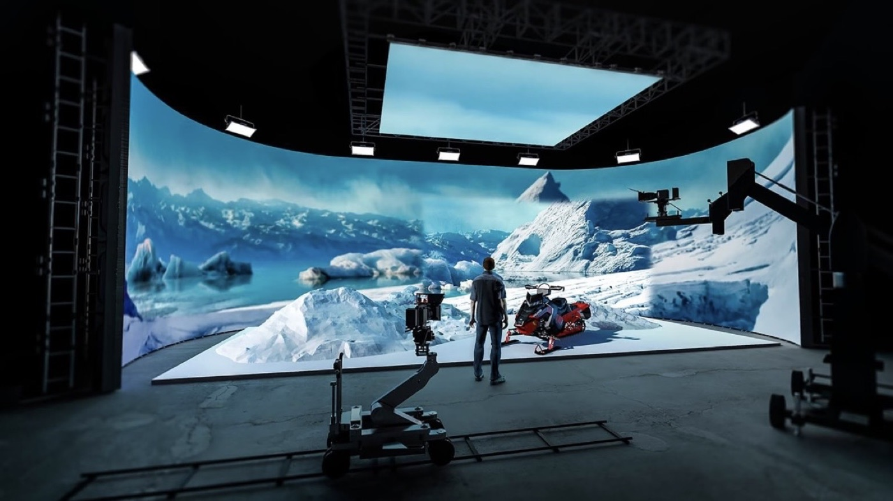
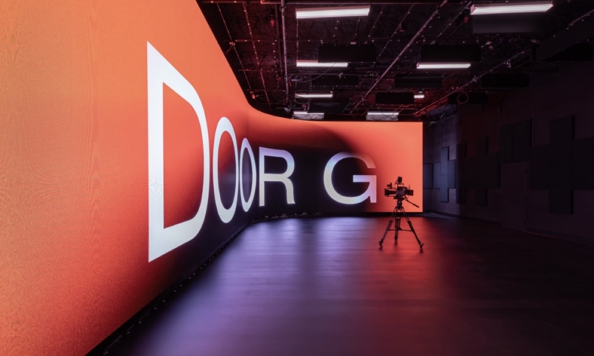
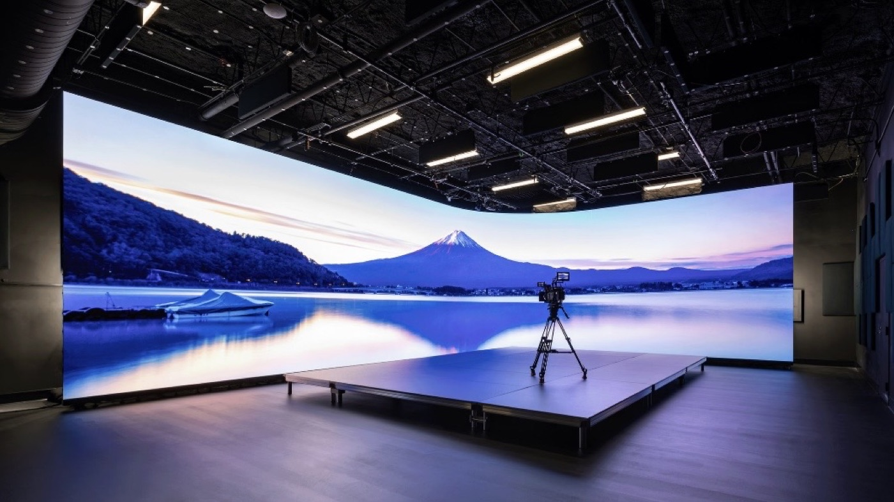
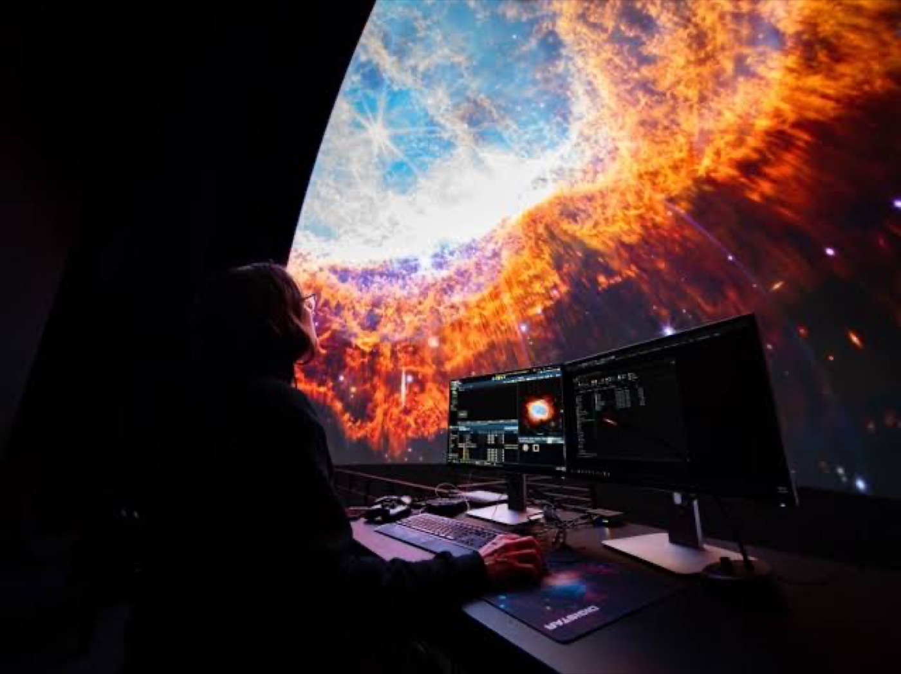

Virtual production moves the background out of post-production and onto a curved LED wall that surrounds the actors. Instead of performing against a green screen and being composited later, the cast sees the environment in real time, the camera captures it in-camera, and the lighting on the actors matches the lighting in the scene because the wall is the light source.
The shift is not only visual. Actors give better performances when they can see the world they are supposed to be standing in, and directors can frame a shot with confidence because what the camera sees is close to the final image. Reflections on props, vehicles, and skin now come from the actual environment rather than from a plate added months later.
The technical cost of that realism is a very demanding LED specification. A wall that looks perfect to the eye can produce moire, banding, or colour shifts the moment a cinema camera points at it. Virtual production therefore treats the LED volume as a camera-facing optical system, not simply as a large display, and every specification is written around how the sensor will see it.
This guide covers the pitch, curve, refresh, and colour decisions that determine whether a volume works, along with the workflow questions that decide whether a studio can actually use it day after day.

A virtual production volume is usually a curved wall, often with a ceiling section, arranged so the camera can shoot in most directions without seeing the edge of the set. The curve serves two purposes: it wraps the environment around the actors to create believable reflections, and it keeps the apparent distance between the LED surface and the camera more consistent across the frame.
Pixel pitch is chosen against the closest the camera will ever get to the wall, not the distance to the audience. A cinema camera on a long lens compresses the image, so the wall behind the actors occupies a large part of the frame and any pixel structure becomes visible. Fine pitch, typically P1.9 to P2.6 for a working volume, keeps the wall crisp through the lens and allows the background to be shot with a shallower depth of field.
The ceiling matters more than newcomers expect. A sky panel above the set provides the soft top light that a background wall cannot, and it also catches reflections on glossy surfaces such as car bodies and helmets. Both the wall and the ceiling must be driven from the same signal system so that the environment scrolls correctly as the camera moves.
Physical geometry also has to be right. Cabinets must lock rigidly so the curve is smooth and the seams do not show, and the volume must be large enough that the actors have room to move without the cameraman catching the boundary. Studios usually build the wall taller and wider than any single shot needs, so the frame can be pushed or pulled without revealing the edge.
| Volume Size | Typical Pitch | Purpose |
|---|---|---|
| Small insert volume | P1.9 - P2.6 | Product and close-up photography |
| Medium stage volume | P2.6 - P3.9 | Dialogue scenes and mid shots |
| Large full volume | P2.6 - P3.9 | Wide shots with camera movement |
| Surround volume with ceiling | P2.6 - P3.9 | Full environment and sky lighting |
| Mobile or pop-up volume | P2.6 - P3.9 | Location shoots and touring productions |

Moire is the defining technical problem of virtual production. It happens when the regular grid of LED pixels beats against the regular grid of the camera sensor, producing a shimmering interference pattern that cannot be removed in post. Because it depends on the relationship between pitch, sensor, and focal length, it is managed by choosing the right pitch for the camera rather than by any single setting.
Refresh rate comes next. A cinema camera samples the wall in short slices, and if the LED refresh is not fast and stable, the wall bands or flickers in the recorded image even though it looks clean on set. Volumes run at very high refresh rates, well above the 3840 Hz used for ordinary indoor display, and the screen timing is locked to the camera and to the studio's synchronisation reference so the two never drift apart.
Shutter angle and frame rate have to be coordinated with the wall as well. The same wall can look perfect at one combination and show artifacts at another, so the specification includes a range of refresh and timing settings that the crew can tune on the day. A generator-lock or genlock signal ties the LED processor, the camera, and the tracking system to a single clock.
Grayscale depth and low-latency processing round out the camera-facing specification. Deep grayscale keeps dark areas smooth instead of banding, and low latency keeps the environment moving in step with the camera so the parallax looks correct in the recorded frame.
| Technical Requirement | Target | Why It Matters |
|---|---|---|
| Refresh rate | Very high, locked to camera | Prevents banding and flicker in recorded frames |
| Pixel pitch | P1.9 - P3.9 by camera distance | Suppresses moire and keeps the wall crisp on lens |
| Grayscale depth | 14-bit or higher | Smooth dark tones without visible banding |
| Latency | Low, stable | Keeps environment parallax correct as camera moves |
| Colour accuracy | Calibrated pipeline | In-camera colour matches the intended grade |
| Viewing angle | Wide and uniform | Holds colour across the whole frame and curve |

A virtual production volume is a colour-managed system, not a monitor. The environment is authored in a colour space, processed through the LED pipeline, and photographed by a camera with its own colour science. If any link is unmanaged, the wall looks right on set but wrong in the camera, and the mismatch is expensive to correct later. Studios therefore calibrate the whole chain and lock the pipeline before shooting begins.
Camera tracking closes the loop. The tracking system reports where the camera is, the render engine draws the correct part of the environment from that position, and the wall displays it with minimal delay. If tracking lags or the latency of the LED pipeline is too high, the background slides against the actors and the illusion breaks. Low latency in the processing chain is therefore a workflow requirement, not a luxury.
The content team has to work to the volume, not the other way around. Backgrounds are built as real 3D environments with correct scale and lighting, not as flat images, because the camera moves and the parallax exposes anything that is two-dimensional. Assets are optimised for real-time rendering, and the team tests them on the actual wall well before the shoot day.
Finally, the practical matter of access. Modules must be serviceable from the front or rear so a failed panel can be replaced during a shoot without dismantling the volume, and the studio needs spare cabinets on hand because a dark module in the background is impossible to ignore on camera.
Asia Vision Technology supplies fine-pitch LED for camera-facing applications, with the CV-PRO COB series reaching a 10000:1 contrast ratio and refresh rates of 3840 Hz and above for clean in-camera capture. Our cabinets use rigid die-cast frames with front and rear service, which keeps a volume running when a single module needs attention mid-shoot.
We cover pixel pitches from P0.9 to P20 so a volume can be specified at the density the camera actually requires, and all panels carry CE, FCC, and RoHS certification with a rated 100,000-hour lifespan. Orders ship in 15 to 20 working days with a 3-year standard warranty.

For this requirement our range covers it directly: the RH-PRO fine-pitch COB (flagship, full redundancy) and the COB CV-PRO series (Ultra-HD fine pitch).
Related reading: Interactive LED Dance Floor & Floor Display Guide 2026